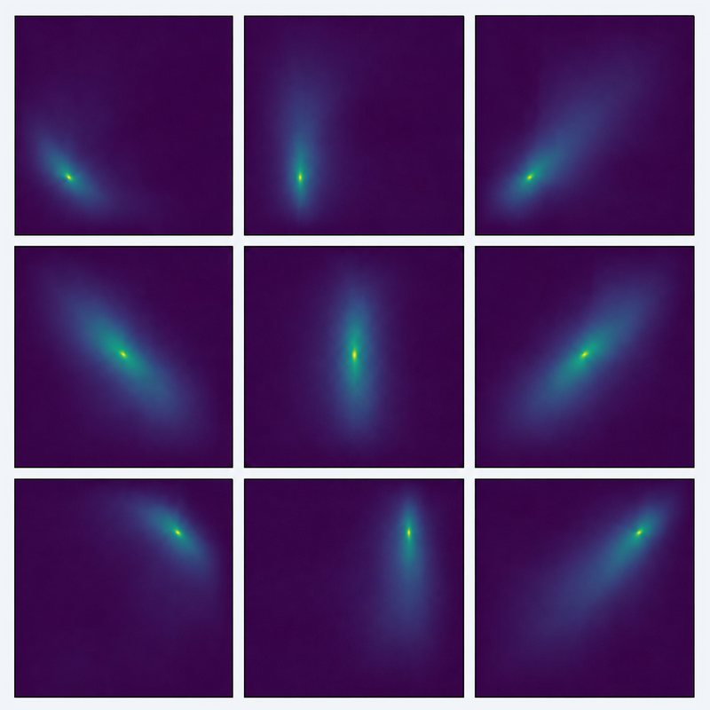
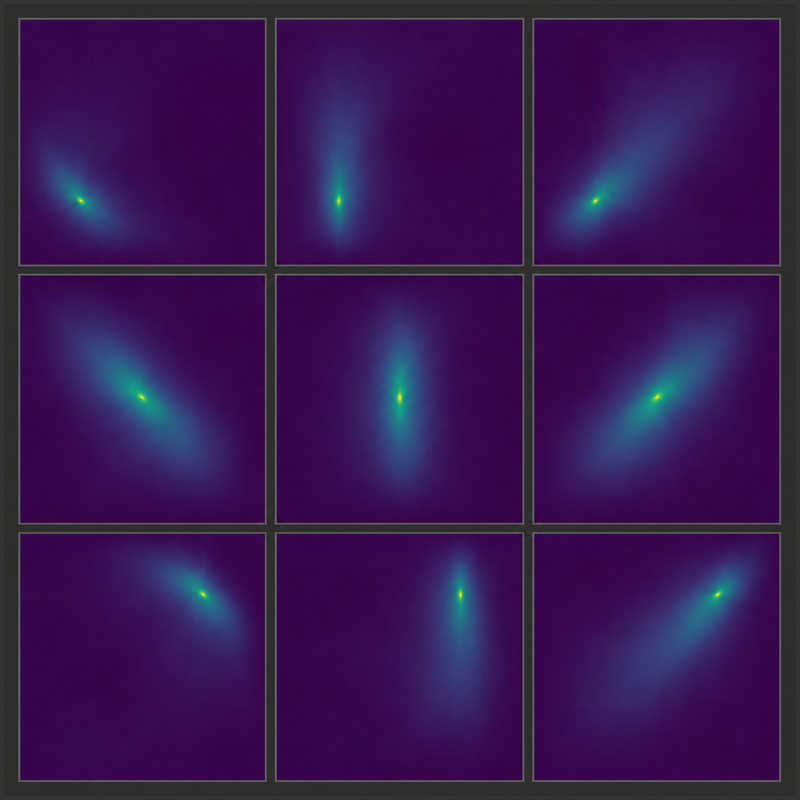
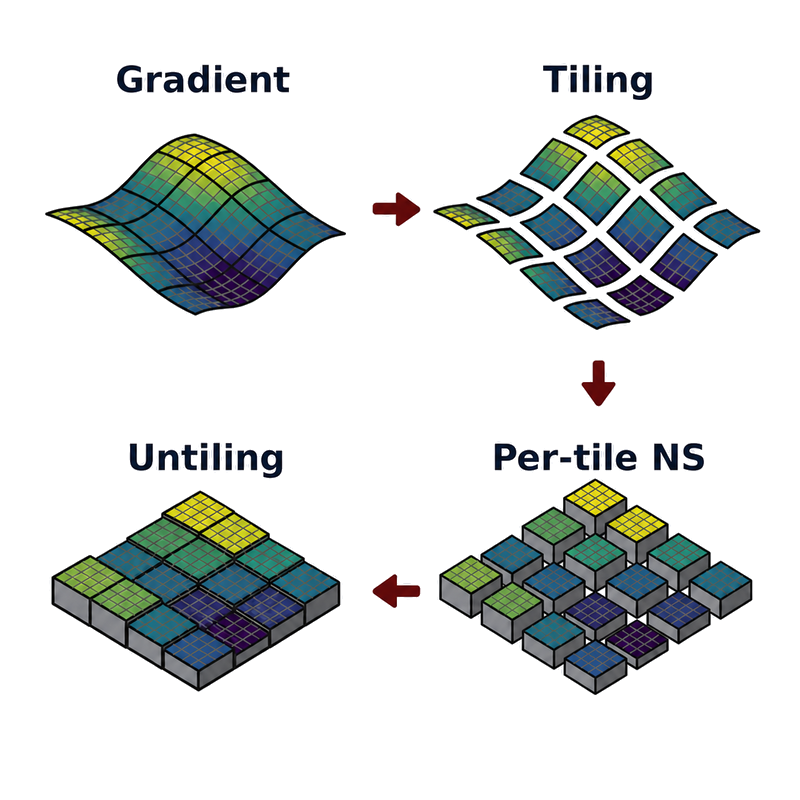
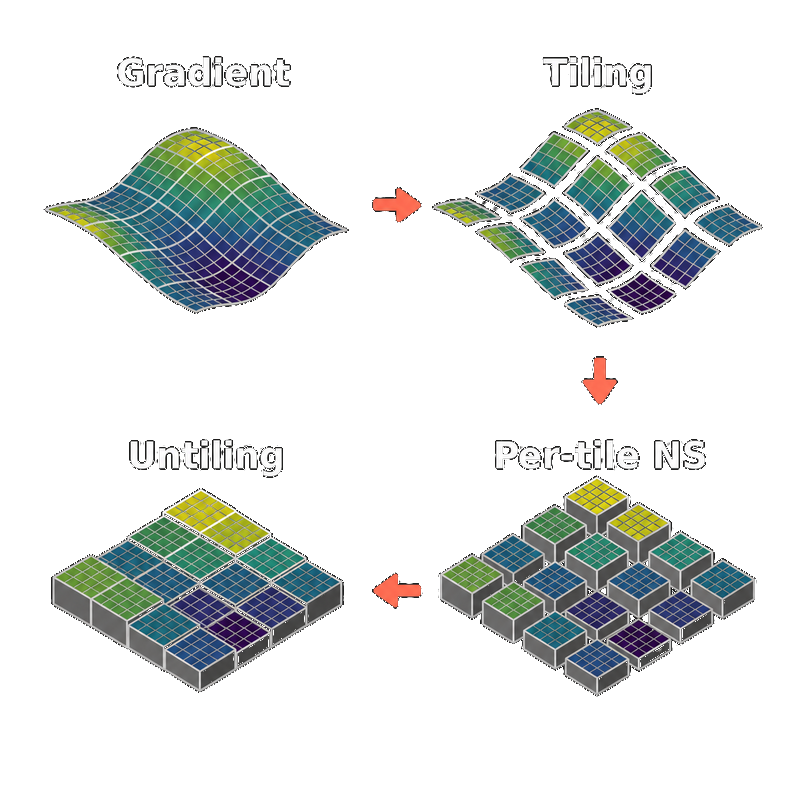
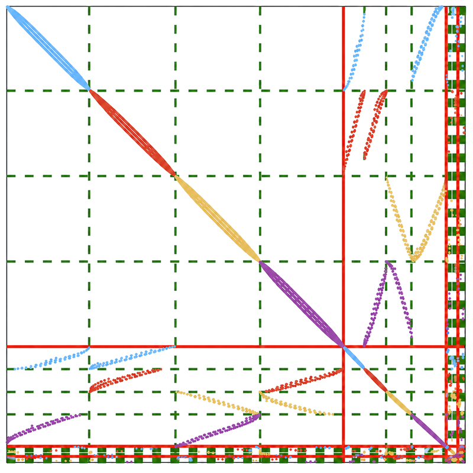
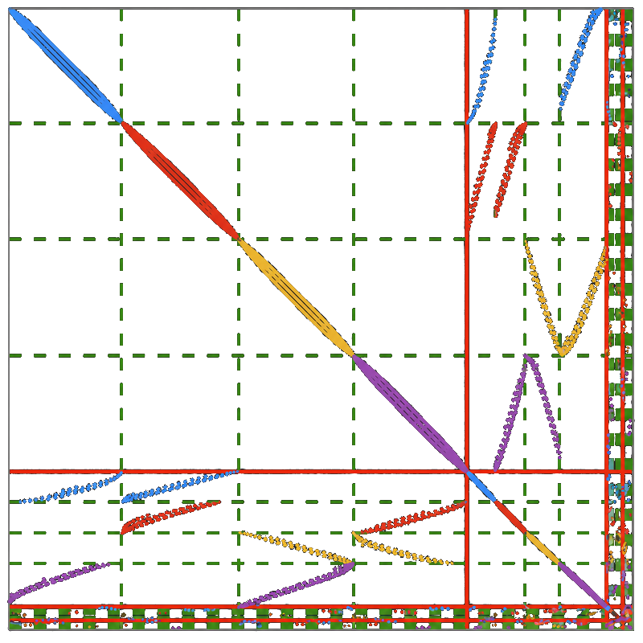

Research
Overview
My research lies at the interface of computational mathematics, machine learning, and scientific computing, with emphasis on scientific machine learning, stochastic optimization, and high-performance computing. Numerical linear algebra provides a common mathematical and algorithmic foundation across these topics. I exploit structure in differential operators, optimization geometry, sparse matrices, and modern computing architectures to link mathematical analysis and algorithm design to efficient, scalable implementations. A particular focus is learning-augmented numerical methods, in which learned components complement rather than replace the mathematical structure of classical solvers.
Research Directions
Scientific Machine Learning
Many scientific applications require solving families of PDEs as coefficients, source terms, or boundary conditions vary. I develop multiscale neural representations of Green's functions and learning-augmented preconditioners that encode the structure of the underlying operator. Applications include many-query elliptic PDEs, nonlinear time-dependent PDEs, and inverse problems, with learned components working alongside numerical solvers.


Stochastic Optimization
Large-scale machine learning often involves ill-conditioned optimization and noisy estimates of matrix quantities. I use preconditioning both to improve stochastic gradient methods and to reduce the variance of trace and log-determinant estimators. Applications range from classical machine learning and Gaussian-process inference to large language model training.


High-Performance Computing
Modern scientific computing and machine-learning workloads require algorithms that account for memory movement, communication, parallelism, and finite-precision arithmetic. I develop scalable algorithms and efficient implementations for numerical solvers, optimization methods, and scientific machine-learning models, with emphasis on distributed-memory parallelism, GPU computing, and mixed precision.

